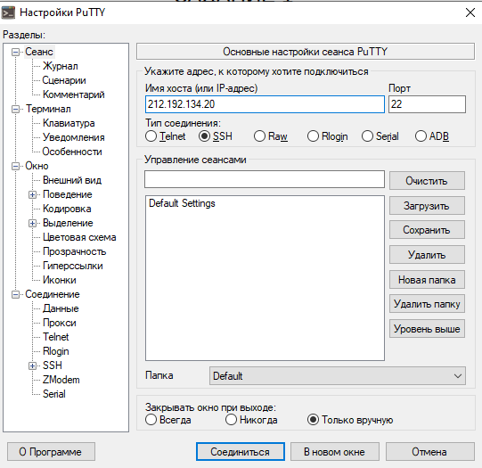
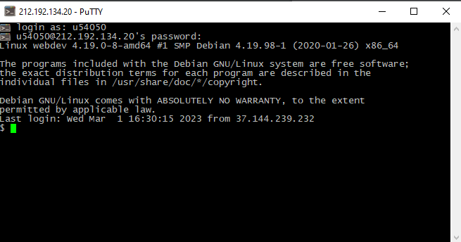
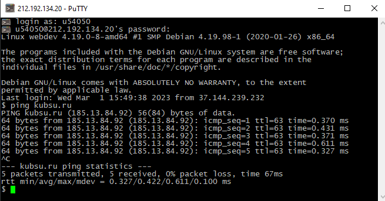
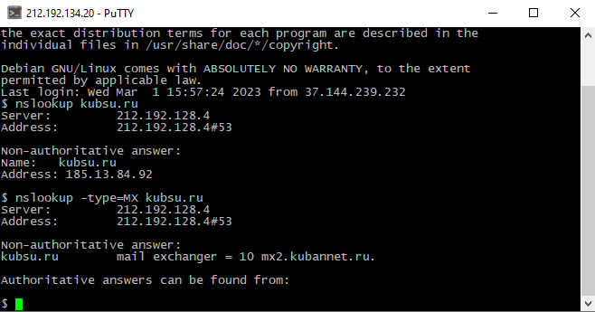
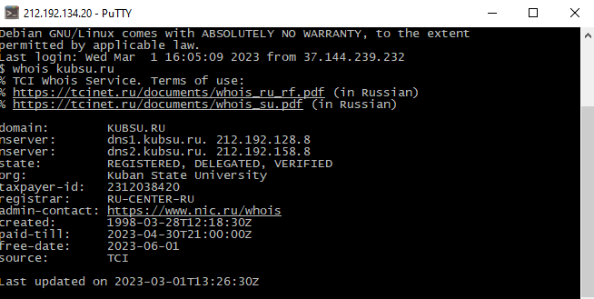
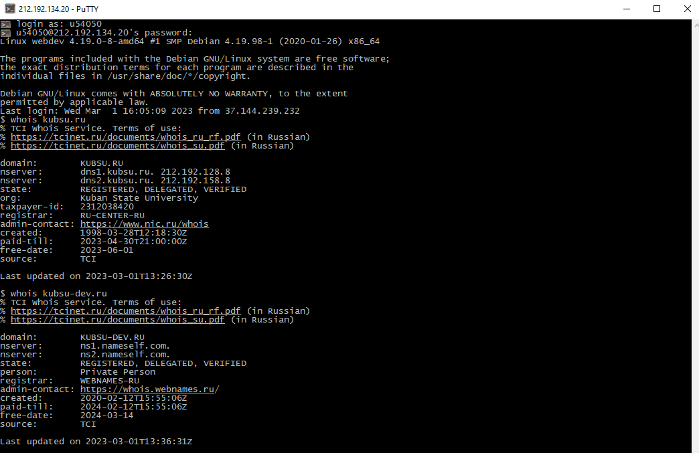
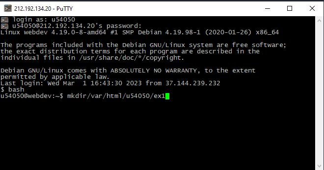
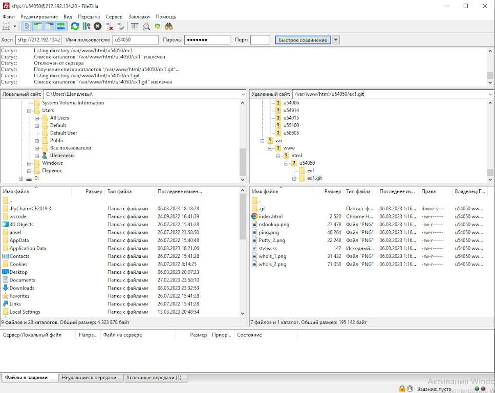

1:

Подключаюсь к учебному серверу по протоколу SSH(сетевой протокол прикладного уровня, позволяющий производить удалённое управление операционной системой и туннелирование TCP-соединений)
2:

Подтверждение подключения к учебному серверу, работающему на операционной системе Linux
3:

Ping – утилита командной строки, которая нужна для проверки подключения к другому компьютеру на уровне IP. Команда ping ip отправляет серию небольших пакетов данных на указанное устройство, а затем показывает время ответа.
Ping – основная команда TCP/IP, которая используется для устранения неполадок подключения, доступности и разрешения имени. Она также позволяет узнать имя и IP-адрес компьютера.
4:

С помощью "nslookup" (Отображает сведения, которые можно использовать для диагностики инфраструктуры системы доменных имен DNS, где DNS-центральный элемент интернет-системы. DNS соединяет IP-адрес с доменным именем, которое ему соответствует) узнал A-запись (указывает соответствие доменного имени и IPv4-адреса)
и MX-записи (указывает на какой адрес почтового сервера должна направлятся электронная почта) доменов
5:


С помощью "whois" (позволяет посмотреть публичные данные о домене. В том числе и дату его создания. Протокол whois также позволяет получать регистрационные данные о владельцах доменных имён, IP-адресов и автономных систем) узнал дату регистрации домена
6:

С помощь команд mkdir(отвечает за создание папки) и git clone(отвечает за копирование данных из репозитория) скопировал данные репозитория на учебный сервер
7:

С помощью FileZilla соединился с учебным сервером
и скопировал на локальный компьютер файлы задания